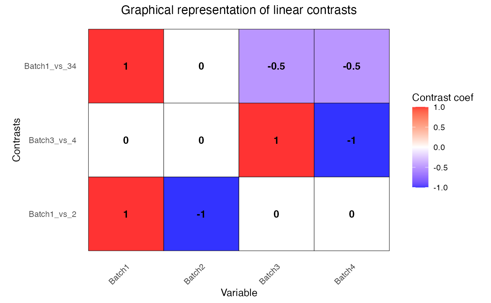

Construct the contrast matrix corresponding to specified contrasts of a set of parameters. Each specified set of contrast weights must sum to 1.
Usage
makeContrastsDream(
formula,
data,
...,
contrasts = NULL,
suppressWarnings = FALSE,
nullOnError = FALSE
)Arguments
- formula
specifies variables for the linear (mixed) model. Must only specify covariates, since the rows of exprObj are automatically used as a response. e.g.:
~ a + b + (1|c)Formulas with only fixed effects also work- data
data.frame with columns corresponding to formula
- ...
expressions, or character strings which can be parsed to expressions, specifying contrasts
- contrasts
character vector specifying contrasts
- suppressWarnings
(default FALSE). suppress warnings for univariate contrasts
- nullOnError
(default FALSE). When a contrast entry is invalid, throw warning and return NULL for that contrast entry
Details
This function expresses contrasts between a set of parameters as a numeric matrix. The parameters are usually the coefficients from a linear (mixed) model fit, so the matrix specifies which comparisons between the coefficients are to be extracted from the fit. The output from this function is usually used as input to dream().
This function creates a matrix storing the contrasts weights that are applied to each coefficient.
Consider a variable v with levels c('A', 'B', 'C'). A contrast comparing A and B is 'vA - vB' and tests whether the difference between these levels is different than zero. Coded for the 3 levels this has weights c(1, -1, 0). In order to compare A to the other levels, the contrast is 'vA - (vB + vC)/2' so that A is compared to the average of the other two levels. This is encoded as c(1, -0.5, -0.5). This type of proper matching in testing multiple levels is enforced by ensuring that the contrast weights sum to 1. Based on standard regression theory only weighted sums of the estimated coefficients are supported.
This function is inspired by limma::makeContrasts() but is designed to be compatible with linear mixed models for dream()
Names in ... and contrasts will be used as column names in the returned value.
Examples
# load library
# library(variancePartition)
library(BiocParallel)
# load simulated data:
# geneExpr: matrix of gene expression values
# info: information/metadata about each sample
data(varPartData)
form <- ~ 0 + Batch + (1 | Individual) + (1 | Tissue)
# Define contrasts
# Note that for each contrass, the weights sum to 1
L <- makeContrastsDream(form, info, contrasts = c(Batch1_vs_2 = "Batch1 - Batch2", Batch3_vs_4 = "Batch3 - Batch4", Batch1_vs_34 = "Batch1 - (Batch3 + Batch4)/2"))
# show contrasts matrix
L
#> Contrasts
#> Levels Batch1_vs_2 Batch3_vs_4 Batch1_vs_34
#> Batch1 1 0 1.0
#> Batch2 -1 0 0.0
#> Batch3 0 1 -0.5
#> Batch4 0 -1 -0.5
# Plot to visualize contrasts matrix
plotContrasts(L)

# Fit linear mixed model for each gene
# run on just 10 genes for time
fit <- dream(geneExpr[1:10, ], form, info, L = L)
# examine contrasts after fitting
head(coef(fit))
#> Batch1_vs_2 Batch3_vs_4 Batch1_vs_34 Batch1 Batch2 Batch3
#> gene1 0.46092425 -0.39590682 0.2556715 -10.1696108 -10.6305350 -10.6232357
#> gene2 0.49420745 0.01791921 0.3911706 -0.7408132 -1.2350206 -1.1230241
#> gene3 -0.08200976 0.32414781 0.3346561 0.3469564 0.4289662 0.1743742
#> gene4 -0.11531023 -0.01435608 -0.1300338 -4.6207874 -4.5054771 -4.4979316
#> gene5 -0.26795357 -0.26762214 -0.1398719 4.6243196 4.8922731 4.6303804
#> gene6 0.67049689 0.01251517 1.0410337 -2.4959563 -3.1664532 -3.5307325
#> Batch4
#> gene1 -10.2273289
#> gene2 -1.1409433
#> gene3 -0.1497736
#> gene4 -4.4835755
#> gene5 4.8980025
#> gene6 -3.5432476
# show results from first contrast
topTable(fit, coef = "Batch1_vs_2")
#> logFC AveExpr t P.Value adj.P.Val z.std
#> gene6 0.67049689 -3.1554790 1.52366339 0.1319712 0.6497599 1.50637414
#> gene2 0.49420745 -1.1281610 1.36219015 0.1774115 0.6497599 1.34876797
#> gene1 0.46092425 -10.4664549 1.30835356 0.1949280 0.6497599 1.29613790
#> gene7 0.31606553 -4.3799381 0.84073462 0.4032967 0.8431315 0.83574794
#> gene9 0.35301723 -2.3079042 0.77799512 0.4391159 0.8431315 0.77368696
#> gene5 -0.26795357 4.7187640 -0.66862559 0.5058789 0.8431315 -0.66526828
#> gene10 -0.11579122 -2.3673775 -0.35847448 0.7210434 0.8940896 -0.35706470
#> gene4 -0.11531023 -4.5359748 -0.34244225 0.7330176 0.8940896 -0.34111426
#> gene3 -0.08200976 0.1702122 -0.24821747 0.8046806 0.8940896 -0.24729409
#> gene8 -0.02567263 0.9171386 -0.06725961 0.9465626 0.9465626 -0.06702401
# show results from second contrast
topTable(fit, coef = "Batch3_vs_4")
#> logFC AveExpr t P.Value adj.P.Val z.std
#> gene8 -0.80455799 0.9171386 -2.16904635 0.03340121 0.3340121 -2.12722716
#> gene1 -0.39590682 -10.4664549 -1.16045670 0.24967624 0.9767482 -1.15113612
#> gene3 0.32414781 0.1702122 1.01160906 0.31512596 0.9767482 1.00452431
#> gene10 -0.24451321 -2.3673775 -0.77854924 0.43881477 0.9767482 -0.77419620
#> gene5 -0.26762214 4.7187640 -0.68664313 0.49452493 0.9767482 -0.68312963
#> gene7 0.18507678 -4.3799381 0.50649399 0.61406680 0.9767482 0.50427691
#> gene9 0.02990159 -2.3079042 0.06772130 0.94619565 0.9767482 0.06748494
#> gene2 0.01791921 -1.1281610 0.05082868 0.95960356 0.9767482 0.05065108
#> gene4 -0.01435608 -4.5359748 -0.04385867 0.96513877 0.9767482 -0.04370599
#> gene6 0.01251517 -3.1554790 0.02924752 0.97674821 0.9767482 0.02914593
# show results from third contrast
topTable(fit, coef = "Batch1_vs_34")
#> logFC AveExpr t P.Value adj.P.Val z.std
#> gene6 1.04103369 -3.1554790 2.37923408 0.01998146 0.1998146 2.32669579
#> gene2 0.39117058 -1.1281610 1.08409908 0.28193902 0.9421247 1.07597371
#> gene3 0.33465610 0.1702122 1.01819011 0.31201734 0.9421247 1.01099809
#> gene1 0.25567153 -10.4664549 0.72973043 0.46791597 0.9421247 0.72587408
#> gene8 -0.27271522 0.9171386 -0.71831187 0.47489082 0.9421247 -0.71454406
#> gene4 -0.13003380 -4.5359748 -0.38839218 0.69886587 0.9421247 -0.38685188
#> gene5 -0.13987190 4.7187640 -0.35098159 0.72662357 0.9421247 -0.34962044
#> gene9 0.11152473 -2.3079042 0.24726976 0.80539615 0.9421247 0.24636959
#> gene7 -0.05691392 -4.3799381 -0.15221534 0.87944287 0.9421247 -0.15167551
#> gene10 -0.02340503 -2.3673775 -0.07285348 0.94212472 0.9421247 -0.07259963